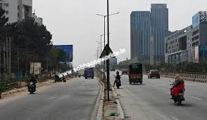

Sobha OneWorld Connectivity

Connectivity is one of the biggest strengths of Sobha OneWorld. The township is strategically located on NH-75 (Old Madras Road), offering seamless access to key parts of East Bangalore and beyond. With proximity to major highways, upcoming infrastructure, and metro connectivity, the project is positioned as one of the most well-connected luxury townships in East Bangalore for 2026.
Residents can reach the Satellite Town Ring Road (STRR) in just 5 minutes and the Kadugodi Metro Station (Purple Line) in about 15–20 minutes. Major employment hubs like Whitefield are accessible within 20 minutes, while the Kempegowda International Airport can be reached in approximately 40–45 minutes via NH-44.
Sobha OneWorld is located in Sarakariguttahalli, Hoskote (PIN: 562114), a fast-developing micro-market in East Bangalore. The area lies at the intersection of key road networks such as NH-75, NH-648, and SH-35, ensuring smooth and flexible connectivity.
This location allows residents to avoid heavy congestion in central Bangalore while still staying close to major IT hubs, schools, hospitals, and daily conveniences.
One of the biggest advantages of the project is its direct access to NH-75, a major arterial road connecting Hoskote to central Bangalore.
Project entry directly from NH-75
Hoskote Toll Plaza within 5 minutes
Smooth connectivity to Whitefield via NH-648
Alternative routes available through SH-35 and internal roads
Even during peak hours, travel remains relatively efficient compared to inner-city traffic zones.
Sobha OneWorld offers excellent access to major job centers across East Bangalore:
Whitefield IT Hub (ITPL & EPIP Zone): ~11–13 km | 20 minutes
Hoskote Industrial Area: 3–5 km | 10 minutes
Budigere Cross & Aerospace Park: 10–12 km | 15–20 minutes
Manyata Tech Park: ~30 km | 40–45 minutes via STRR
This makes it an ideal choice for both IT professionals and industrial workforce.
The project is surrounded by several reputed schools and colleges:
Schools (within 5–10 km):
Ryan International School
Narayana e-Techno School
Capstone High School
Colleges (within 3–7 km):
MVJ College of Engineering
Other nearby degree and technical institutions
This ensures that families have quality education options close to home.
Residents have access to reliable healthcare facilities nearby:
MVJ Medical College & Hospital: 3–5 km
Ashwini Hospital: 5–8 km
Additional local clinics and specialty centers within short distance
Emergency and routine medical care are easily accessible from the township.
The project is well-supported by shopping and retail infrastructure:
Orion Uptown Mall: 5–8 km
Phoenix Marketcity & VR Bengaluru: 15–20 km
Daily essentials: Reliance Smart, local markets within 2–5 km
This ensures a comfortable lifestyle with everything nearby.
Kempegowda International Airport: 35–40 km | 40–45 minutes via NH-75 & NH-44
KR Puram Railway Station: ~12 km | 20 minutes
Whitefield Railway Station: ~15–17 km
The project offers excellent multi-modal connectivity for frequent travelers.
The Satellite Town Ring Road (STRR) is a major upcoming infrastructure project located just 5 minutes from Sobha OneWorld.
Will connect Hoskote to Hebbal, Tumkur Road, and Hosur Road
Reduces cross-city travel time significantly
Expected to cut travel time by up to 30%
Likely to drive property appreciation by 15%+ by 2031
This is a key factor behind the project’s strong investment potential.
Kadugodi Metro Station (Purple Line): ~15–20 minutes
Direct metro access to MG Road, Indiranagar, and Majestic
Proposed extension toward Hoskote in future
Metro connectivity adds convenience for daily commuters and increases demand among working professionals.
Whitefield & Kadugodi: 15–20 km
KR Puram & Hoodi: 10–12 km
Industrial zones (Malur & Narasapura): 15–20 km
These connections make Sobha OneWorld a central point between residential, industrial, and IT zones.
| Unit Type | Size (sq. ft.) | Starting Price | Price per sq. ft. |
|---|---|---|---|
| 1 BHK | 740 | ₹1.09 Crores onwards | ₹14,500 |
| 2 BHK Lux | 1070 | ₹1.58 Crores onwards | ₹14,500 |
| 2 BHK Grande | 1200 | ₹1.77 Crores onwards | ₹14,500 |
| 3 BHK Lux | 1525 | ₹2.25 Crores onwards | ₹14,500 |
| 3 BHK Grande | 1825 | ₹2.73 Crores onwards | ₹14,500 |
| 4 BHK Lux | 2100 | ₹3.14 Crores onwards | ₹14,500 |
| 4 BHK Grande | 2425 | ₹3.63 Crores onwards | ₹14,500 |
Sobha OneWorld stands out as a highly connected township with direct highway access, proximity to IT hubs, and strong future infrastructure support. Its location on NH-75, combined with upcoming projects like STRR and metro expansion, makes it one of the most promising residential destinations in East Bangalore.
East Bangalore has become one of the most preferred real estate destinations due to the rapid growth of IT hubs, industrial zones, and infrastructure projects. Developments like the Satellite Town Ring Road (STRR) and metro expansion have significantly improved connectivity. As a result, property demand is steadily increasing, leading to consistent price appreciation and strong investment potential.
Sobha OneWorld is expected to be completed by December 2031. Since the project is currently in its early stages, buyers have the advantage of entering at pre-launch pricing, which may offer better returns as the project progresses.
The project is located approximately 12–13 km from Whitefield, with an average travel time of around 20–25 minutes via NH-75 and connecting roads. The Kempegowda International Airport is about 28–35 km away, and can typically be reached within 35–45 minutes, depending on traffic conditions.
Yes, Hoskote is emerging as a strong residential destination offering modern gated communities with better space, security, and affordability compared to central Bangalore. The area also has improving access to schools, hospitals, workplaces, and daily conveniences, making it suitable for families.
Budigere Cross and surrounding areas are set to benefit from major infrastructure projects such as the Peripheral Ring Road (PRR) and the Bangalore–Chennai Expressway. These developments are expected to enhance connectivity, reduce travel time, and drive future property value growth in the region.